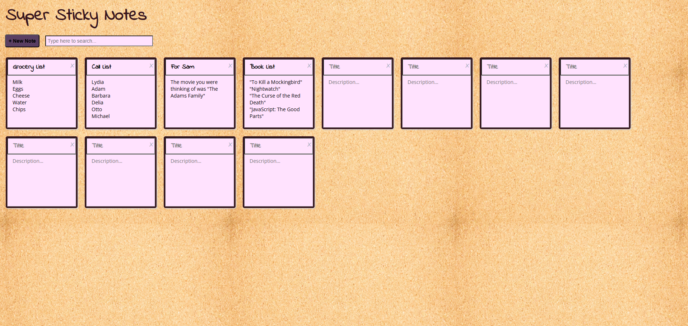

Katherine Siegel
Front-End Web Developer
Hi! I'm a web developer focused on
combining imagination and
accessibility to create
memorable, immersive web designs.
Let's Create Together!
Projects

Sticky Notes
An interactive UI that allows the user
to create “sticky notes” on their
computer to keep track of to-do items.
Allows for note creation, editing,
searching, and deletion. Employs the
use of stateful components to recall
notes and edits from earlier sessions.
Skills: HTML5, CSS3,
JavaScript React, ES6, JSX, Data Flow
Management, DOM Manipulation
Tools: CodeSandbox,
GitHub

Unplugged
A 3-page responsive website. Built
from a professional design comp, it
incorporates responsive design that
adapts to mobile, table, and desktop
screens.
Skills: HTML5, CSS3,
Flexbox, Version Control, Responsive
Web Design, Media Queries
Tools: Visual Code
Studio, Chrome DevTools, GitBash,
GitHub, Photoshop

Guess the Word Game
A desktop game built using vanilla
JavaScript. Players guess the word
entering one letter at a time until
they either run out of guesses or
reveal the correct word. Uses CSS and
JavaScript to give a playful 80s
theming.
Skills: HTML5, CSS3,
JavaScript, Version Control,
Responsive Web Design, APIs, DOM
Manipulation
Tools: Visual Code
Studio, Chrome DevTools, React
Developer Tools, GitBash, GitHub

GitHub Repo Gallery
A portfolio gallery featuring my
personal GitHub portfolio. Uses the
GitHub API to pull data from each repo
to create a gallery where visitors can
see more details about each project.
Skills: HTML5, CSS3,
JavaScript, Version Control,
Responsive Web Design, APIs, DOM
Manipulation
Tools: Visual Code
Studio, Chrome DevTools, React
Developer Tools, GitBash, GitHub
Name Tag Generator
A name tag generator that allows for
the creation of bulk name tags that
can be created and deleted. Employs
stateful components to recall name
tags between sessions.
Skills: HTML5, CSS3,
JavaScript React, ES6, JSX, Data Flow
Management, State Management
Tools: CodeSandbox,
GitHub
Skills
Version Control | Flexbox | Media
Queries | Responsive Web Design | APIs |
DOM Manipulation | ES6 | JSX | Managing
data flow | TypeScript | Chrome DevTools
| React Developer Tools | Visual Studio
Code | Photoshop | CodeSandbox | Stylus
| Wave | Web Developer | Node.js
About Me
Hello! I’m
Katherine Siegel, a
front-end web developer living in Miami,
FL.
My passion is finding ways to combine
immersive, fun web design with
accessibility for all. My background is
unique as I hold a BS in Communications:
Motion Pictures and a BA in Theatre with
a minor in Creative Writing. I love the
challenge of web development. Most of my
experience is in analysis and design,
interesting to be sure, but they exist
in the realm of ideas. As a web
developer, I get to actively build -
bring the application into existence
rather than hand off my thoughts and
ideas to be someone else. I get such a
thrill out of being able to say,
“I made that!”
When I’m not coding, I spend my time
watching movies and plays. Occasionally,
you can catch me performing in an improv
show – I’m a graduate of the Second City
Conservatory.